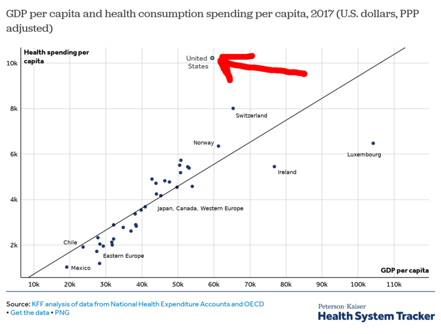
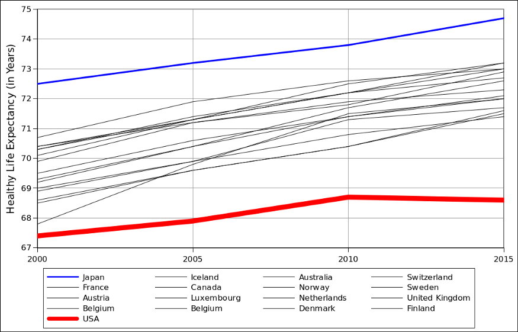

The best way to examine anything is to look at the costs and the benefits. The healthcare system in the USA has high cost and is not only bad, but getting worse.
The dollar cost is pretty easy to measure. In 2017, the USA spent $10,739 per person on healthcare. It accounted for 18% of all spending (GDP).
Other rich countries spend about 10% on healthcare.

Image source: https://www.healthsystemtracker.org/chart-collection/health-spending-u-s-compare-countries
If I had to put a number on it, we’re paying 60% more than we should, which amounts to roughly $4,000 per-person.
That is the cost of healthcare. Now, what is the benefit?
Healthcare’s benefit is long life, without disease or disability. To measure it, public health officials use life expectancy, adjusted for sickness and injury. Under this measure, a healthy year of life is worth more than one spent coughing in bed or walking with a crutch. The World Health Organization calls this “Health life expectancy” (abbreviated “HALE” or “HLE”), while others call it “Healthy Life Years” (HLY).

Data Source: http://apps.who.int/gho/data/node.main.HALE?lang=en
As the HALE data shows, the USA is worse than other rich countries. It is not only falling behind but getting worse in absolute terms. The healthy life expectancy in the USA fell between 2010 and 2015. We are currently 4.0 years behind the median of other rich countries.
To conclude, compared to other rich nations, we pay $4,000 more per person per year. And we live 4 years less.
Return to Numbers That Matter